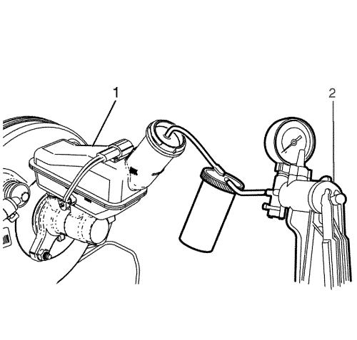
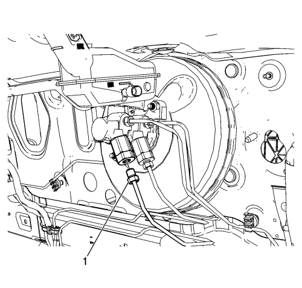
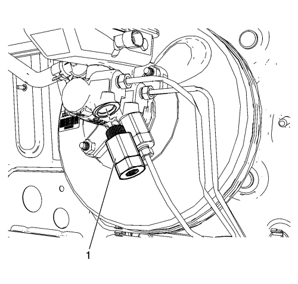

Sustitución de válvula dosificadora de frenada — Volante a la izquierda
Procedimiento de desmontaje
Advertencia : Consulte Advertencia de líquido de frenos irritante en la sección Prólogo
Atención: Consulte Advertencia sobre los efectos del líquido de frenos sobre la pintura y los componentes eléctricos en la sección Prólogo
- Pise y suelte el pedal de freno varias veces hasta que el pedal se ponga duro, para agotar la reserva de vacío del servofreno de vacío.
- Limpie a fondo el depósito del cilindro maestro y el cuerpo del cilindro maestro la eliminar la suciedad y los residuos.
- Desenchufe el conector eléctrico del interruptor del indicador de nivel de líquido de frenos.

- Vacíe el líquido de frenos del depósito del cilindro maestro (1), con una bomba de vacío neumática o con una bomba de vacío manual (2).

- Desconecte el racor de la tubería de freno de salida de la válvula dosificadora (1).
Tape el herraje del tubo del freno para evitar la pérdida de líquido de frenos y la contaminación.

- Desmonte la válvula dosificadora (1), del cilindro maestro.
Procedimiento de montaje
Atención: Consulte Precaución con las fijaciones en la sección Prólogo
- Monte la válvula dosificadora de frenada (1) en el cilindro maestro, y apriétela a 35 N·m (26 lb pie).
- Conecte el racor de la tubería de freno de salida de la válvula dosificadora (1), y apriételo a 18 N·m (13 lb pie).
- Purgue el sistema de sistema de frenos hidráulicos. Consultar
Purga de aire del sistema de frenos hidráulicos : Presión → Manual .
| © Copyright Chevrolet Europe. All rights reserved |